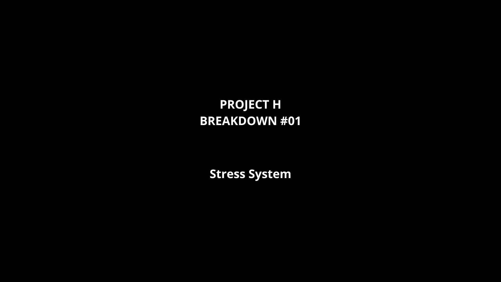

Technical Sound Designer & Composer
PROJECT H
Psychological Horror Investigation Game
Built in Unity + Wwise
Sound is not background. Sound is the system. A first-person horror prototype where breathing, stress, light and adaptive audio shape player perception, tension and feedback.
Featured Technical Breakdown
Project H — Stress, Breathing & Adaptive Audio
A short breakdown of how physiological feedback, Wwise RTPCs and gameplay states are used to make tension readable without relying on traditional UI.
Sound Design Systems
Gameplay audio as player feedback
Adaptive Audio
RTPC-driven audio systems connected to stress, breathing, environmental states and player feedback.
Stress & Breathing System
A physiological feedback loop where stress affects breathing, heartbeat, filtering and visual perception.
Light & Emotional Exposure
Warm light stabilizes the player, darkness increases exposure, and lighting becomes part of the gameplay loop.
Event-Driven Gameplay Audio
Unity events, Wwise States, Switches and modular systems connect player actions with real-time audio feedback.
Audio-First Production Design
Project H is designed as a solo-dev prototype where production constraints become part of the creative direction: modular environments, limited visual exposition and systemic feedback allow sound and light to carry the experience.
Vertical Slice
Project H — Memory Investigation Loop
The current vertical slice uses Robert's memory as a test case for the core experience: investigate who a person was, understand the main unresolved regret, solve multiple memory-based interactions, collect fragments and observe how the environment reacts after each discovery.
Each fragment pushes the space into a defensive reaction through audio, lighting, stress behavior and level state changes. The focus stays on what the player can read and do, not on explaining the hidden lore behind the world.
Music Composition
Film Made Only By Music
Cinematic composition, emotional pacing and storytelling through music.
Latest release
The Aftermath
A story of love, betrayal and revenge told through cinematic electronic composition.


Cristian Giordano
Technical Sound Designer & Composer
About
Cristian Giordano
I am a Technical Sound Designer & Composer focused on interactive audio, gameplay feedback and immersive systems.
My current work is Project H, a psychological horror prototype built in Unity and Wwise, where sound, breathing, stress and light are treated as gameplay systems.
My background in music composition helps me design audio with structure, emotional pacing and narrative intention.
Contact